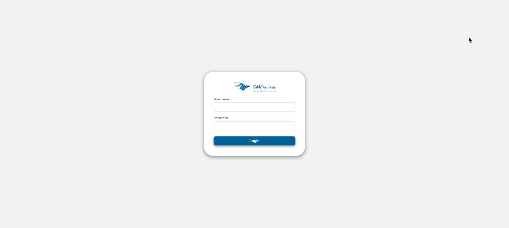

Halaman Login
rdt/login

- Masukkan Username dan Password yang diberikan admin/IT.
- Klik Login.
- Selanjutnya akan muncul layar Pilih Platform — klik kartu RDT untuk masuk ke aplikasi.
Sistem login ini dipakai bersama oleh beberapa aplikasi GMF (bukan hanya RDT), jadi satu akun bisa dipakai untuk platform lain di masa depan.